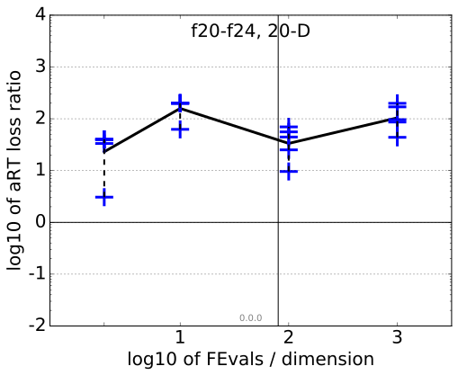
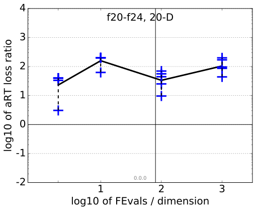

aRT loss ratios
All functions in 5-D and 20-D
f1–f24 in 5-D, maxFE/D=80
| #FEs/D
| best |
10 % |
25 % |
med |
75 % |
90 % |
| RLUS/D
| 80 |
80 |
80 |
80 |
80 |
80 |
| 2 |
2.3 |
3.0 |
5.8 |
7.7 |
10 |
10 |
| 10 |
3.0 |
3.8 |
4.9 |
6.3 |
11 |
50 |
| 100 |
2.6 |
3.1 |
7.3 |
11 |
18 |
87 |
| 1e3 |
3.0 |
9.5 |
14 |
59 |
75 |
1.2e2 |
f1–f24 in 20-D, maxFE/D=80
| #FEs/D
| best |
10 % |
25 % |
med |
75 % |
90 % |
| RLUS/D
| 80 |
80 |
80 |
80 |
80 |
80 |
| 2 |
3.1 |
7.1 |
31 |
40 |
40 |
40 |
| 10 |
7.0 |
10 |
39 |
1.5e2 |
2.0e2 |
2.0e2 |
| 100 |
6.5 |
7.8 |
22 |
34 |
59 |
2.7e2 |
| 1e3 |
34 |
46 |
91 |
1.8e2 |
3.2e2 |
2.7e3 |
aRT loss ratio versus the budget in number of f-evaluations divided by dimension. For each given budget FEvals, the target value ft is computed as the best target f-value reached within the budget by the given algorithm. Shown is then the aRT to reach ft for the given algorithm or the budget, if the GECCO-BBOB-2009 best algorithm reached a better target within the budget, divided by the best aRT seen in GECCO-BBOB-2009 to reach ft. Line: geometric mean. Box-Whisker error bar: 25-75%-ile with median (box), 10-90%-ile (caps), and minimum and maximum aRT loss ratio (points). The vertical line gives the maximal number of function evaluations in a single trial in this function subset. See also the following figure for results on each function subgroup.
Separable functions in 5-D and 20-D
Misc. moderate functions in 5-D and 20-D
Ill-conditioned functions in 5-D and 20-D
Multi-modal functions in 5-D and 20-D
Weak structure functions in 5-D and 20-D
aRT loss ratios (see the previous figure for details). Each cross (+) represents a single function, the line is the geometric mean.
{kind=link}
{kind=link}
{kind=link}
{kind=link}
{kind=link}
{kind=link}
{kind=link}
{kind=link}
{kind=link}
{kind=link}
 
{kind=link}